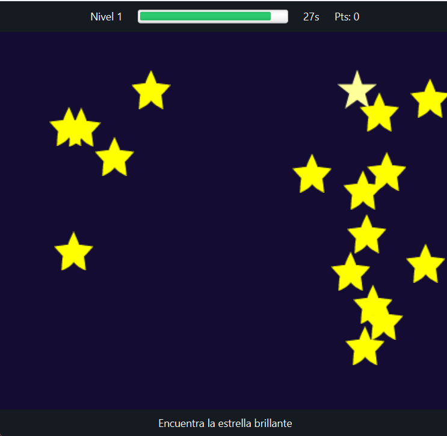
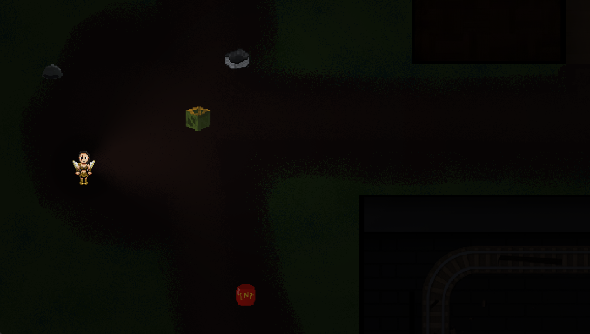
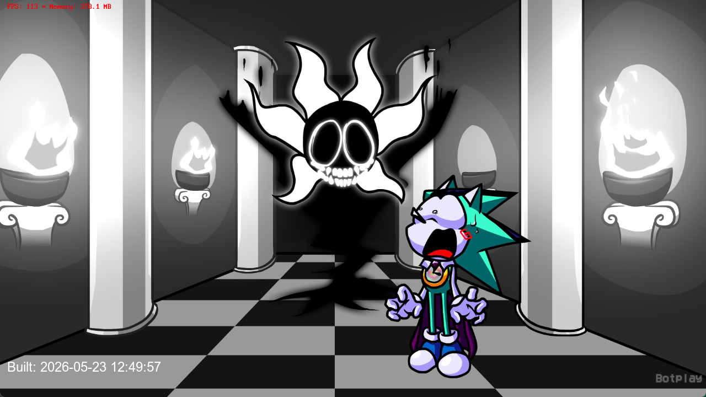

CV Interactivo
Este mismo sitio: un CV personal construido con HTML5 semántico, CSS3 y JavaScript nativo, incluyendo modo claro/oscuro y validación de formulario, publicado con control de versiones en GitHub.
Aún no cuento con experiencia laboral formal, pero estos son los proyectos personales y académicos donde he aplicado lo que voy aprendiendo.
Este mismo sitio: un CV personal construido con HTML5 semántico, CSS3 y JavaScript nativo, incluyendo modo claro/oscuro y validación de formulario, publicado con control de versiones en GitHub.
Proyecto desarrollado en Java como parte de mi formación en programación orientada a objetos, aplicando lógica de programación y estructuras de datos.

Juego desarrollado en C++, explorando mecánicas de juego y programación de bajo nivel dentro de un proyecto de temática de terror.

Videojuego desarrollado con Haxe, un proyecto personal.
